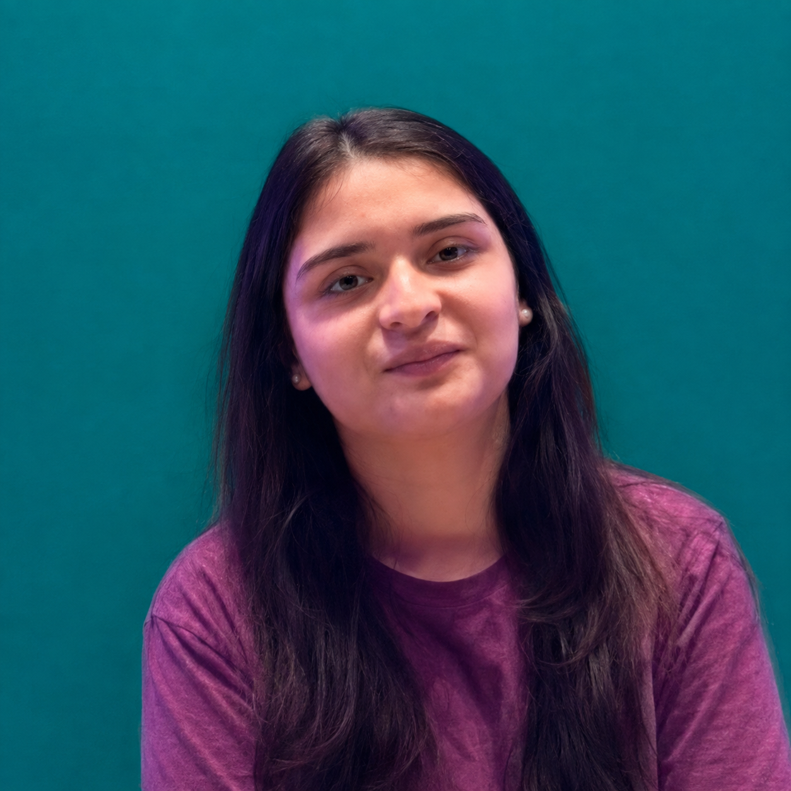
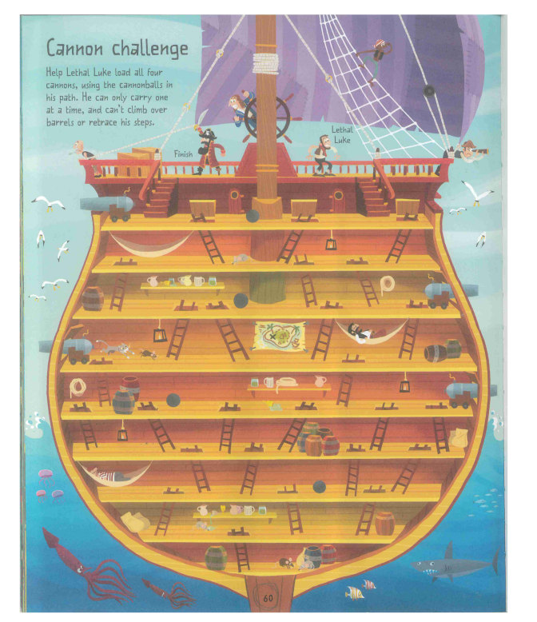

I'm a second-year Artificial Intelligence and Data Science student at Middlesex University Dubai, with a passion for coding, creativity, and building exciting projects.
I love exploring new technologies, experimenting with different ideas, and bringing creative projects to life. That's exactly how FL1NK began!
The inspiration for FL1NK actually goes back to my first year at university, when I worked on a coursework project involving search algorithms.
The challenge was to develop an algorithm that could find the shortest path through a pirate maze. It was an exciting experience that introduced me to the world of pathfinding and problem-solving.
That project sparked an idea: What if I could turn a simple pirate maze into a real, interactive adventure game?
And that's how the journey of FL1NK began!
